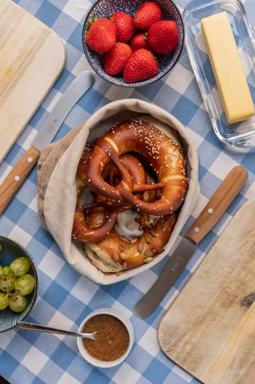

From Oma Resi's book
Schnitzel
Pounded to order, breaded in fresh crumbs and fried in clarified butter until the crust puffs away from the meat. Never sits under a heat lamp.
Haus Linde is a family place. The recipes are older than all of us, the produce comes from down the road, and somebody named Brandl is in the building every night.

For twenty years Josef and Annelie Brandl ran a small Gasthaus in a village outside Rosenheim, at the edge of the Bavarian Alps. Josef cooked. Annelie ran the room and knew every regular's order before they sat down.
A winter trip to the Gulf Coast in 2017 turned into a second trip, then a third, and in 2020 they sold the Gasthaus. Their daughter Lena, who had already moved to Tampa for college, found the empty building on Central Ave. Haus Linde opened in the spring of 2021, named for the linden tree that shaded their old garden.
From Oma Resi's book
Pounded to order, breaded in fresh crumbs and fried in clarified butter until the crust puffs away from the meat. Never sits under a heat lamp.
Three days, no shortcuts
Beef rests in red wine vinegar, juniper and bay for 72 hours. The gravy is finished with crushed gingersnaps, the way it's done in Franconia.
Every hour, on the hour
Our pretzels are dipped in a lye bath and baked in small batches all day, so the one on your table is never more than an hour old.
German cooking follows the calendar, and so do we. When something good is growing nearby, it goes on the menu.
See what's on the menuChef and co-owner
Forty years behind a stove, from Munich hotel kitchens to the family Gasthaus. Still breads the first schnitzel every night.
Co-owner, front of house
Runs the room, the Stammtisch and the reservation book. Will find your group a table.
Bar and beer manager
Picks every beer on the list and trains the team to pour a proper Helles in under seven minutes.
Sous chef
A St. Pete native who learned spätzle from Josef in 2021 and now makes 40 pounds of it a day.
Tables inside the Bierstube or out in the garden.